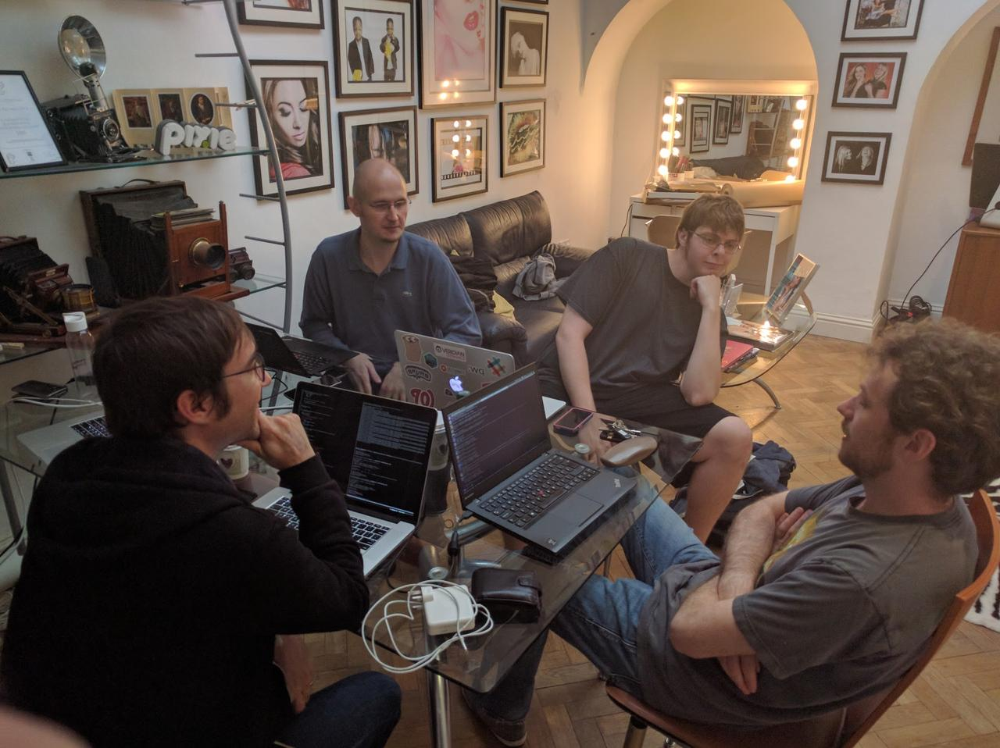

OpenStack Designate - Where we are.
I have been asked a few times recently "What is the state of the Designate project?", "How is Designate getting on?", and by people who know what is happening "What are you going to do about Designate?".
Needless to say, all of this is depressing to me, and the people that I have worked with for the last number of years to make Designate a truly useful, feature rich project.
Note
TL;DR; for this - Designate is not in a sustainable place.
To start out - Designate has always been a small project. DNS does not have massive cool appeal - its not shiny, pretty, or something you see on the front page of HackerNews (unless it breaks - then oh boy do people become DNS experts).
A line a previous PTL for the project used to use, and I have happily robbed is "DNS is like plumbing, no one cares about it until it breaks, and then you are standing knee deep in $expletive". (As an aside, that was the reason we chose the crocodile as our mascot - its basically a dinosaur, old as dirt, and when it bites it causes some serious complications).
Unfortunately that comes over into the development of DNS products sometimes. DNSaaS is a check box on a tender response, an assumption.
We were lucky in the beginning - we had 2 large(ish) public clouds that needed DNS services, and nothing currently existed in the eco-system, so we got funding for a team from a few sources.
We got a ton done in that period - we moved from a v1 API which was synchronous to a new v2 async API, we massively increased the amount of DNS servers we supported, and added new features.
Unfortunately, this didn't last. Internal priorities within companies sponsoring the development changed, and we started to shed contributors, which happens, however disappointing. Usually when this happens if a project is important enough the community will pick up where the previous group left off.
We have yet to see many (meaningful) commits from the community though. We have some great deployers who will file bugs, and if they can put up patch sets - but they are (incredibly valuable and appreciated) tactical contributions. A project cannot survive on them, and we are no exception.
So where does that leave us? Let have a look at how many actual commits we have had:
| Havana | 172 |
| Icehouse | 165 |
| Juno | 254 |
| Kilo | 340 |
| Liberty | 327 |
| Mitaka | 246 |
| Newton | 299 |
| Ocata | 98 |
Next cycle, we are going to have 2 community goals:
- Control Plane API endpoints deployment via WSGI
- Python 3.5 functional testing
We would have been actually OK for the tempest one - we were one of the first external repo based plug-ins with designate-tempest-plugin
For WSGI based APIs, this will be a chunk of work - due to our internal code structure splitting out the API is going to be ... an issue. (and I think it will be harder than most people expect - anyone using olso.service has eventlet imported - I am not sure how that affects running in a WSGI server)
Python 3.5 - I have no idea. We can't even run all our unit tests on python 3.5, so I suspect getting functional testing may be an issue. And, convincing management that re-factoring parts of the code base due to "community goals" or a future potential pay-off can be more difficult than it should.

We now have a situation where the largest "non-core" project [1] in the tent has a tiny number of developers working on it. 42% of deployers are evaluating Designate, so we should see this start to increase.
How did this happen?
Like most situations, there is no single cause.
Certainly there may have been fault on the side of the Designate leadership. We had started out as a small team, and had built a huge amount of trust and respect based on in person interactions over a few years, which meant that there was a fair bit of "tribal knowledge" in the heads of a few people, and that new people had a hard time becoming part of the group.
Also, due to volume of work done by this small group, a lot of users / distros were OK leaving us work - some of us were also running a production designate service during this time, so we knew what we needed to develop, and we had pretty quick feedback when we made a mistake, or caused a bug. All of this resulted in the major development cost being funded by two companies, which left us vulnerable to changes in direction from those companies. Then that shoe dropped. We are now one corporate change of direction from having no cores on the project being paid to work on the project. [2]
Preceding this, the governance of OpenStack changed to the Big Tent While this change was a good thing for the OpenStack project as a whole it had quite a bad impact on us.
Pre Big Tent, you got integrated. This was at least a cycle, where you moved docs to docs.openstack.org, integrated with QA testing tooling, got packaged by Linux distros, and build cross project features.
When this was a selective thing, there was teams available to help with that, docs teams would help with content (and tooling - docs was a mass of XML back then), QA would help with tempest and devstack, horizon would help with panels.
In Big Tent, there just wasn't resources to do this - the scope of the project expansion was huge. However the big tent happened (in my opinion - I have written about this before) before the horizontal / cross project teams were ready. They stuck to covering the "integrated" projects, which was all they could do at the time.
This left us in a position of having to reimplement tooling, figure out what tooling we did have access to, and migrate everything we had on our own. And, as a project that (at our peak level of contribution) only ever had 5% of the number of contributors compared to a project like nova, this put quite a load on our developers. Things like grenade, tempest and horizon plug-ins, took weeks to figure out all of which took time from other vital things like docs, functional tests and getting designate into other tools.
One of the companies who invested in designate had a QE engineer that used to contribute, and I can honestly say that the quality of our testing improved 10 fold during the time he worked with us. Not just from in repo tests, but from standing up full deployment stacks, and trying to break them - we learned a lot about how we could improve things from his expertise.
Which is kind of the point I think. Nobody is amazing at everything. You need people with domain knowledge to work on these areas. If you asked me to do a multi-node grenade job, I would either start drinking, throw my laptop at you or do both.
We still have some of these problems to this day - most of our docs are in a messy pile in docs.openstack.org/developer/designate while we still have a small amount of old functional tests that are not ported from our old non plug-in style.
All of this adds up to make projects like Designate much less attractive to users - we just need to look at the project navigator to see what a bad image potential users get of us. [3] This is for a project that was ran as a full (non beta) service in a public cloud. [4]
Where too now then?
Well, this is where I call out to people who actually use the project - don't jump ship and use something else because of the picture I have painted. We are a dedicated team, who cares about the project. We just need some help.
I know there are large telcos who use Designate. I am sure there is tooling, or docs build up in these companies that could be very useful to the project.
Nearly every commercial OpenStack distro has Designate. Some have had it since the beginning. Again, developers, docs, tooling, testers, anything and everything is welcome. We don't need a massive amount of resources - we are a small ish, stable, project.
We need developers with upstream time allocated, and the budget to go to events like the PTG - for cross project work, and internal designate road map, these events form the core of how we work.
We also need help from cross project teams - the work done by them is brilliant but it can be hard for smaller projects to consume. We have had a lot of progress since the Leveller Playing Field debate, but a lot of work is still optimised for the larger teams who get direct support, or well resourced teams who can dedicate people to the implementation of plugins / code.
As someone I was talking to recently said - AWS is not winning public cloud because of commodity compute (that does help - a lot), but because of the added services that make using the cloud, well, cloud like. OpenStack needs to decide that either it is just compute, or if it wants the eco-system. [5] Designate is far from alone in this.
I am happy to talk to anyone about helping to fill in the needed resources - Designate is a project that started in the very office I am writing this blog post in, and something I want to last.
For a visual this is Designate team in Atlanta, just before we got incubated.

and this was our last mid cycle:
and in Atlanta at the PTG, there will be two of us.
| [1] | In the Oct-2016 User Survey Designate was deployed in 23% of clouds |
| [2] | I have been lucky to have a management chain that is OK with me spending some time on Designate, and have not asked me to take time off for Summits or Gatherings, but my day job is working on a completely different project. |
| [3] | I do have other issues with the metrics - mainly that we existed before leaving stackforge, and some of the other stats are set so high, that non "core" projects will probably never meet them. |
| [4] | I recently went to an internal training talk, where they were talking about new features in Newton. There was a whole slide about how projects had improved, or gotten worse on these scores. A whole slide. With tables of scores, and I think there may have even been a graph. |
| [5] | Now, I am slightly biased, but I would argue that DNS is needed in commodity compute, but again, that is my view. |